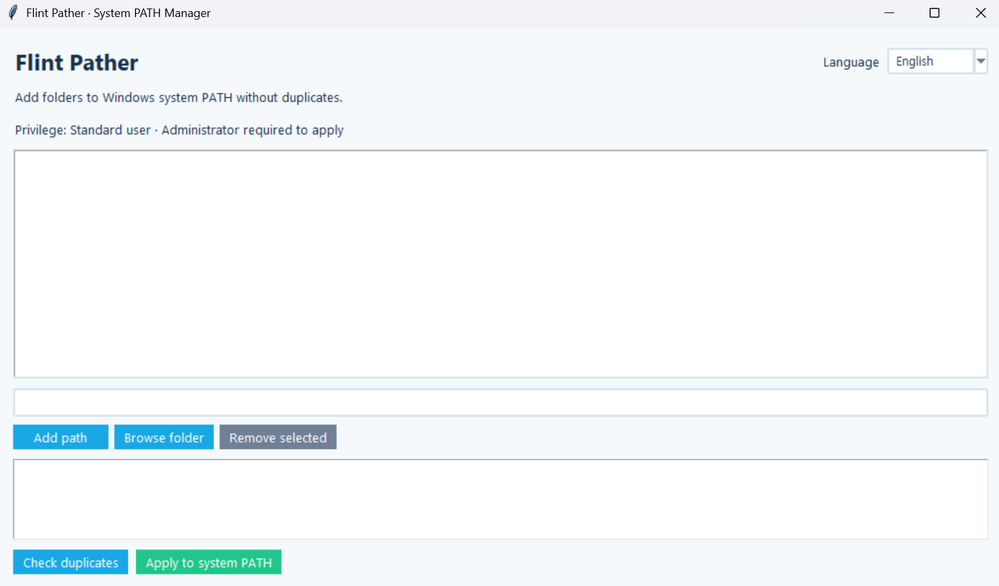

Flint Pather
Version: 1.0.0
Flint Pather
Flint Pather is a GUI utility that adds program folders to the Windows system PATH without creating duplicate entries. It allows you to run utilities from the terminal without having to enter their full paths.
How to Use
- Launch the program and review the current list of candidate paths.
- Enter a folder path in the
Add Pathfield or select one usingBrowse Folder. - Select and remove any unwanted paths from the list.
- Click
Check Duplicatesto see which paths are already registered and which will be added. - Run the program as an administrator and click
Apply to System PATHto add the new paths.
Administrator privileges are required to modify the Windows system PATH. Removing a path from the candidate list does not delete it from the existing system PATH.
Key Features
- Manual path entry and folder selection
- Add or remove candidate paths, with automatic saving and restoration in
%APPDATA% - Duplicate detection using path normalization
- Preserve existing system PATH entries while adding only new paths
- Preview registered paths and pending additions before applying changes
- Administrator privilege checks and operation result messages
- Korean and English interfaces, with automatic restoration of window size and position
Running the Program
Run the following command in a terminal with administrator privileges:
python pather.pyCandidate paths are automatically saved to %APPDATA%\Flint\Toolbox\Pather\config\paths.json and restored the next time the program starts. The list is empty on the first launch.
Modifying the candidate list does not automatically change the system PATH. Changes take effect only when you click Apply to System PATH.
After updating the PATH, open a new terminal to use the updated environment variables.
Manual PATH Configuration
- Press
Win + Rand entersysdm.cpl. - Navigate to
Advanced → Environment Variables. - Edit
PathunderSystem variables. - Add the required program folder paths.
- Open a new terminal to verify that the changes have taken effect.